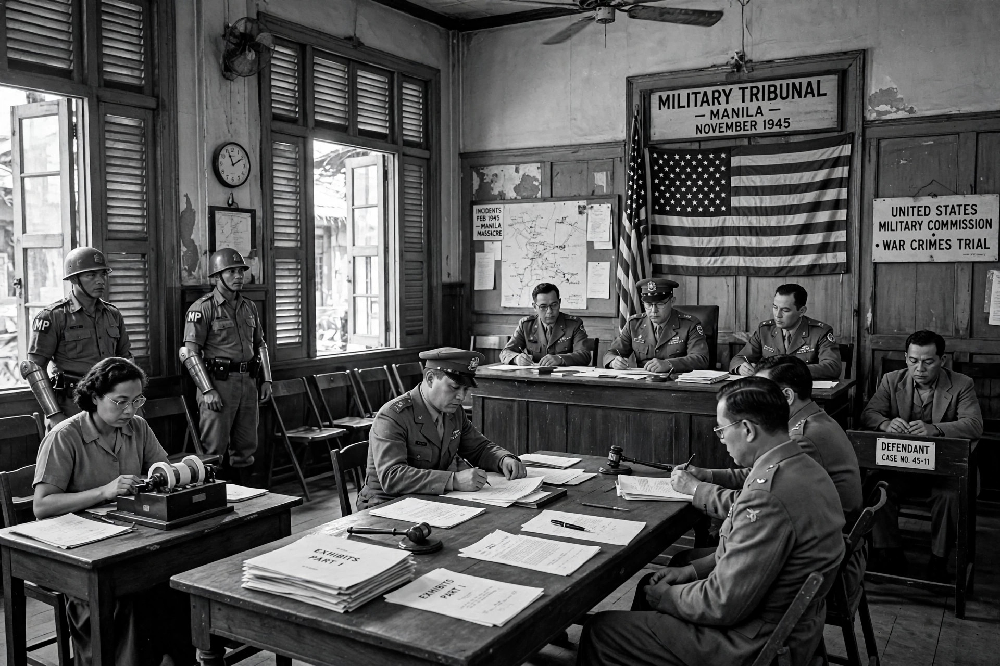

Command responsibility is an omission mode of individual criminal liability in international humanitarian law, under which a superior (military or civilian) may be held criminally responsible for crimes committed by subordinates under their effective command and control, where the superior knew or should have known of the crimes and failed to take all necessary and reasonable measures to prevent or repress them, or to submit the matter to the competent authorities for investigation and prosecution.

The doctrine has roots in early codifications of the laws of war, including the Lieber Code of 1863. It was applied after the Second World War, most famously in the trial of Japanese general Tomoyuki Yamashita, who was convicted by a United States military commission for crimes committed by troops under his command in the Philippines. The doctrine was codified in Additional Protocol I to the Geneva Conventions (1977), the statutes of the ad hoc tribunals for Yugoslavia and Rwanda, and Article 28 of the Rome Statute of the International Criminal Court.
Under modern jurisprudence, command responsibility generally requires: (1) a superior–subordinate relationship with effective control over the perpetrators; (2) that the superior knew, or owing to the circumstances should have known, that the crimes were being or were about to be committed; and (3) that the superior failed to take all necessary and reasonable measures within their power to prevent or punish the crimes.